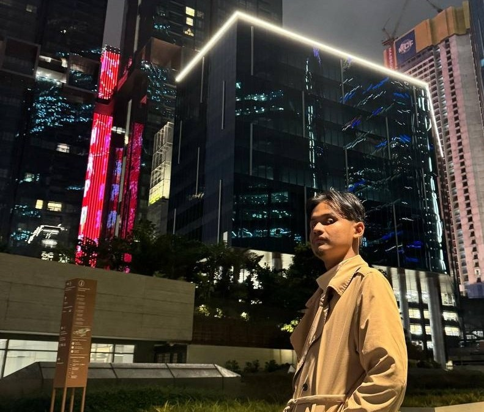

An average 24 year old AI and coding enthusiast, on the lifelong journey of chasing his dreams
Amir Zakariah is a 24 year old who is driven yet passionate about all coding and artificial intelligence related things. He strives to give 200 percent commitment to whatever he does, regardless of the cost. Currently based in Shah Alam, he is seeking a position related to his fields of studies, Computer Science, so he can get the opportunity to delve into real world applications of his skills, along with honing his existing knowledge
As an individual Amir strives to be a jack of all trades, being able to adapt anywhere regardless of the conditions.
His proficiencies may increase overtime since Amir is a lifelong learner who does not fear delving into the unknown
Initially a young boy his journey began as a pure science student in Sekolah Menengah Jalan Empat, located in Bandar Baru Bangi. During his years in school, he participated in the Japanese club where he discovered his love for languages
As a pure science student, Amir studied subjects such as chemistry, physics and biology. For his curriculum, he also actively participated in the Japanese Club. For his Sijil Pelajaran Malaysia, he managed to achieve 4As 4Bs 1C and 1D
After school, he decided to continue his studies by pursuing a Diploma in Computer Science at Universiti Teknologi Mara, Arau, Perlis. Studying various programming languages such as C++, Java, assembly language, Python, MySql, HTML, CSS and Javascript, software such as Adobe Premier Pro, Mobile Application Development ,he graduated with a CGPA of 3.79
After 2 years of working, he decided to further his studies, going for a Bachelors Degree in Computer Science (Hons.), in Universiti Teknologi MARA, Shah Alam. There, he managed to honed his skills in Mobile Application Development, Python, MySql, Java, Html, Css and Javascript and picking up new skills such as artificial intelligence, enterprise javabeans. His current CGPA is 3.13
Throughout the years Amir has gathered a wealth of various knowledges throughout his career paths, since he has explored various different careers
After completing school, he worked as a cashier. There, he developed soft skills during communication, as well as improving his critical thinking since he constantly had handle cash transactions and suppliers
As a student, he had participated in various small scale activities and projects, as well as developing his public speaking skills and leadership skills
After his Diploma, he joined up the workforce of Pusat Bimbingan Alternatif Cinta Syria Malaysia as a teacher. There, he was teaching both mathematics and IT. He also teached Grade 9 students about HTML, leading them to be able to create their own HTML pages. During his time as a teacher, he also volunteered in relief efforts during the Sri Muda floods, as well as became the master of ceremonies for sports day and appreciation day
During his degree, he volunteered to become class representative for 3 semesters. He also volunteered to become the master of ceremonies for his SULAM programme and for the sharing session held in relations about Data Security. He also became the group leader for various projects, focused on being strategic yet efficient in delivering results
To hone his skills, amir also pursued various freelance programming jobs, such as being involved in photo editing ,AI development, software development, website and system development in various programming languages.
After completion of the academic side of his studies, he proceeded for a 4 month internship with Sunsuria Berhad, located in Damansara. There his day to day duties include producing power automate flows, as well resolving requests sent to the IT department.
As an individual Amir has achieved various milestones in life
As a teacher, Amir was awarded the Teacher Appreciation Award for his contributions to the school, as well as his students
Amir was also awarded the Anugerah Naib Canselor for maintaining a CGPA above 3.5 throughout his diploma
NADA MONZER MURAD, COORDINATOR TEACHER, PUSAT BIMBINGAN ALTERNATIF CINTA SYRIA MALAYSIA
Email: nada.aeccsm@gmail.com
AZLAN ISMAIL, ADVISOR, UNIVERSITI TEKNOLOGI MARA
Email: azlanismail08@gmail.com
WALTER NGOOI VOON CHUNG, GENERAL MANAGER, SUNSURIA BERHAD
Email: Walterngooi@sunsuria.com
{kind=link}
{kind=link}
{kind=link}
{kind=link}
{kind=link}
{kind=link}
{kind=link}
{kind=link}
{kind=link}
{kind=link}
{kind=link}
{kind=link}
{kind=link}
{kind=link}
{kind=link}
{kind=link}
{kind=link}
{kind=link}